6' 2" · An unflappable lounge singer in his fifties: lean, tall, narrow and controlled, entirely at ease in the room. Long clean jacket and trouser lines, low relaxed shoulders; never broad, squat or heavily coiled. His recognition cues are a hard jet-black slick side part with one sharp highlight band, a narrow dinner-jacket line, a black bow tie hanging undone, and a microphone held loosely across the upper torso. No hat or headwear. He wears a bright moss dinner jacket with satin peak lapels, a cream dress shirt with an open collar, black dress trousers with a satin side stripe, and polished black loafers. He holds one chrome wireless handheld microphone loosely across the upper torso in his character-right hand, angled upward and inward toward his mouth; no cord, no stand. His ready stance has narrow staggered feet with both knees slightly flexed, chin raised, one shoulder angled forward, and the microphone hand at chest height. Palette, as base/shadow/highlight per material: moss #0D7039 / #074522 / #2FA55E; cream #E6D9BC / #B9A98B / #FFF4D9; dark #20232B / #101217 / #3A3E48; white #F1EEE5 / #BDB9AE / #FFFFFF; metal #6F747C / #34383E / #B5BAC0; skin #B97855 / #754631 / #D99A75; hair #171719 / #080809 / #424248. Never draw: a broad or squat build; large hair; a fully tied bow tie; an exuberant grin; an aggressive fist; flashy jewellery; the microphone in the character-left hand; a microphone cord, stand or duplicate microphone; logos, text or real brands.
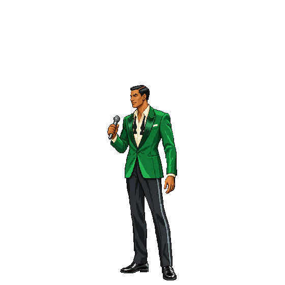
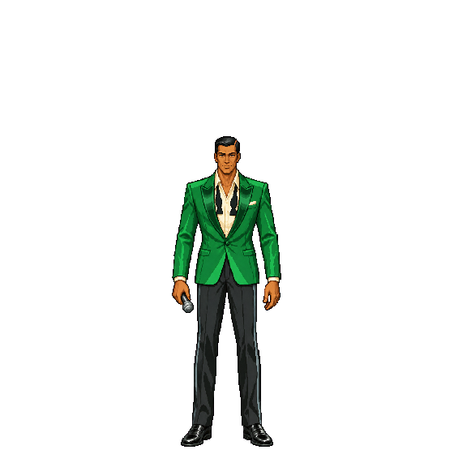
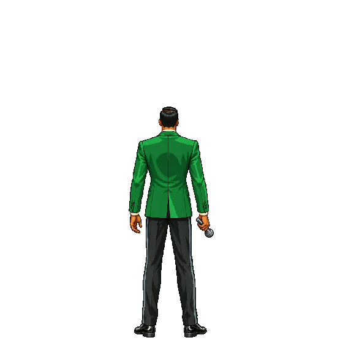
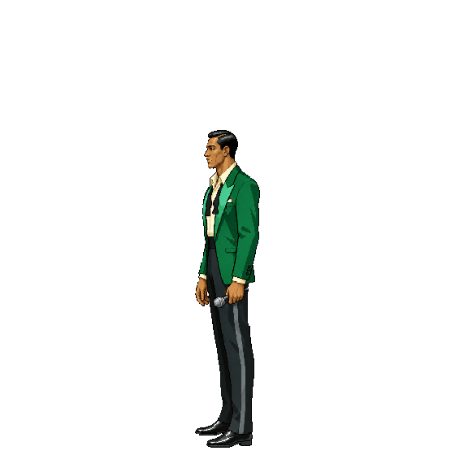
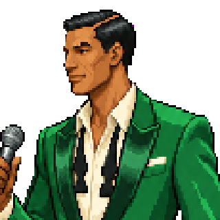
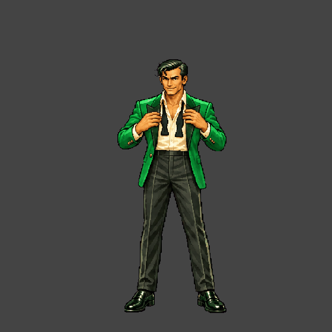
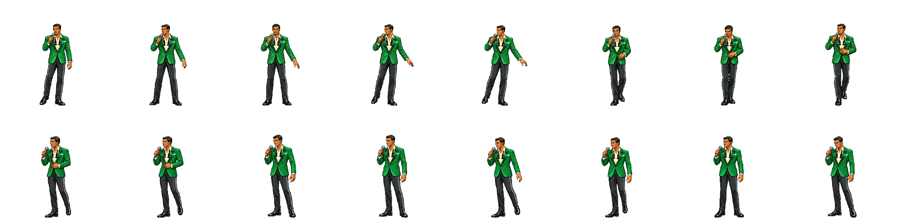
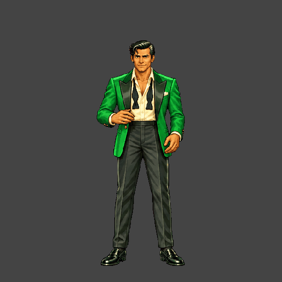
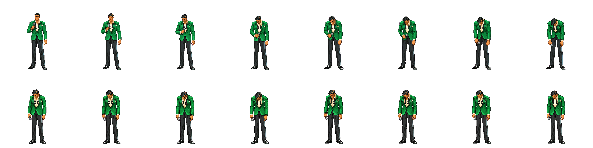
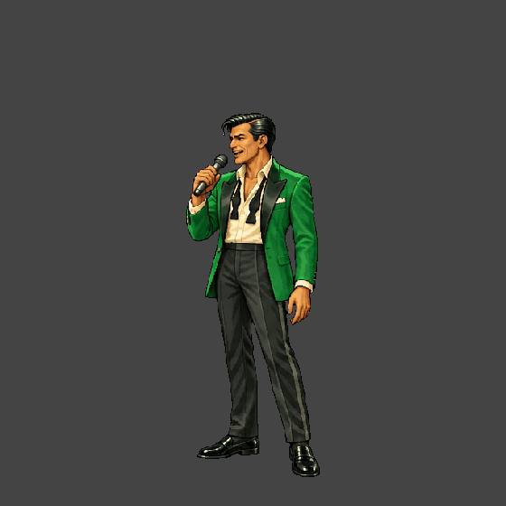
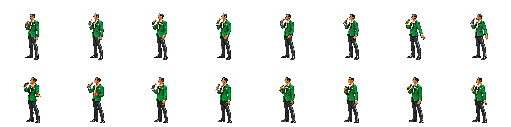
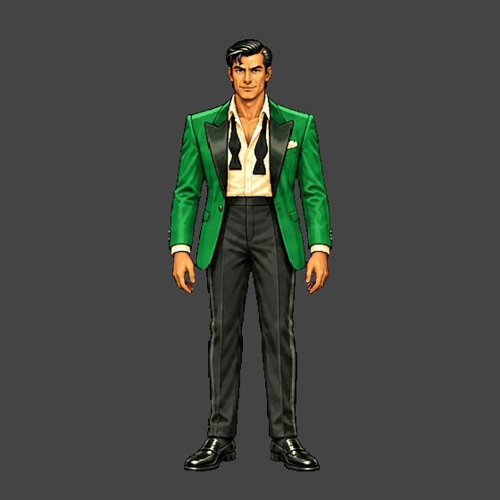
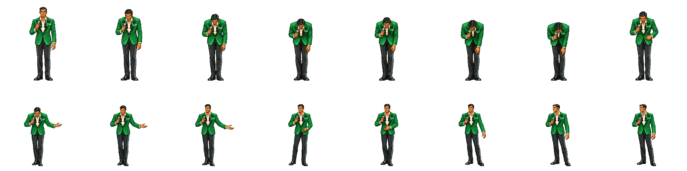